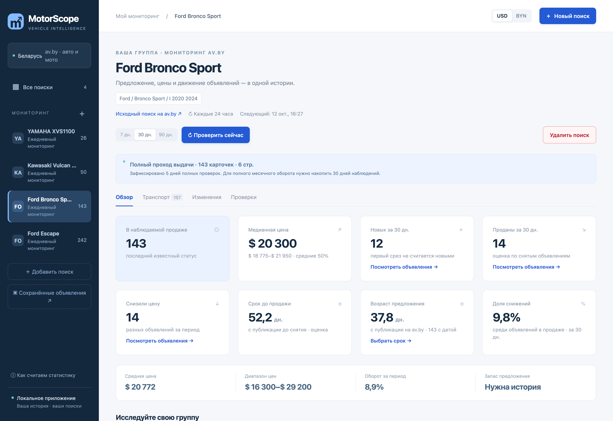
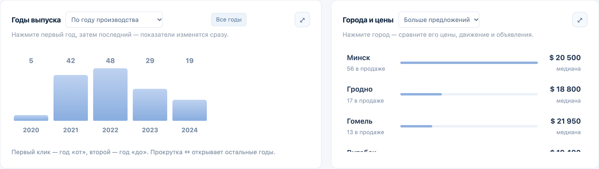
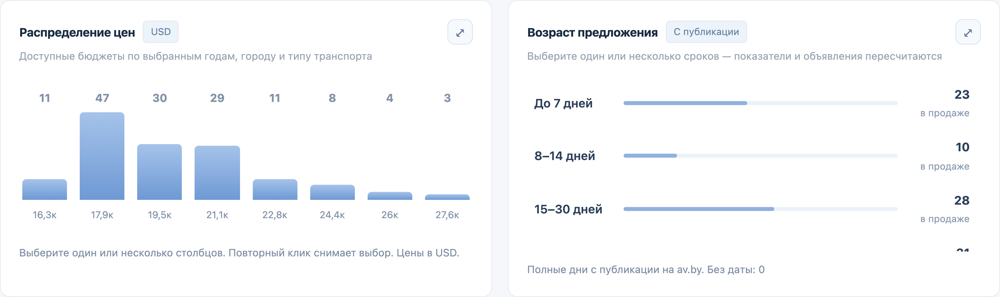
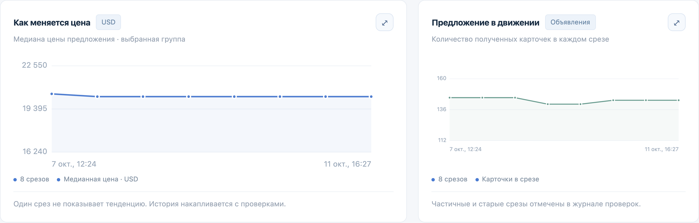
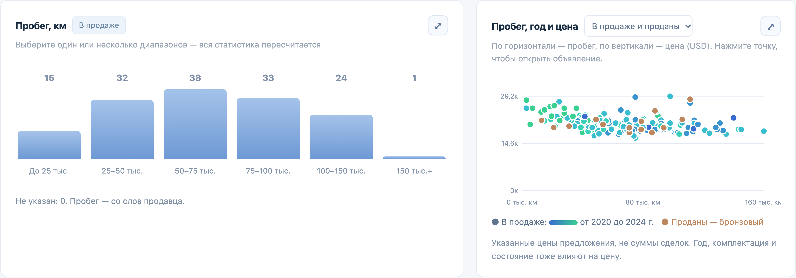

MOTORSCOPE / МОНИТОРИНГ И АНАЛИТИКА АВТОРЫНКА
Мониторинг рынка автомобилей и мотоциклов
Готовый проект · Протестирован заказчиком

01 / ЗАДАЧА
Понимать, как меняется рынок интересующих моделей
Заказчику требовался инструмент для постоянного наблюдения за рынком определённых моделей автомобилей и мотоциклов с учётом года выпуска, двигателя и других характеристик.
Важно было отслеживать не только текущие цены, но и изменения рынка: сколько новых объявлений появляется, какие предложения исчезают с площадки, как долго они размещаются и насколько часто продавцы снижают стоимость.
Сравнение по пробегу, году выпуска и городу должно было помогать анализировать отдельные сегменты без ежедневного ручного поиска и ведения таблиц.
Отдельное требование — сохранять объявления вместе с характеристиками и фотографиями даже после их исчезновения с av.by.
02 / РЕШЕНИЕ
Что делает приложение
Сравнение рыночных сегментов
Интерактивные графики позволяют не только просматривать статистику, но и управлять аналитикой. Выбор года выпуска, города, ценового диапазона или срока размещения автоматически пересчитывает показатели.
Фильтры можно комбинировать, чтобы сравнивать стоимость, количество и движение объявлений в отдельных рыночных сегментах.


03 / ИНЖЕНЕРИЯ
Ключевые решения при разработке
04 / РЕЗУЛЬТАТ
Данные для оценки рынка и планирования закупок
Заказчик получил инструмент для регулярного анализа интересующих моделей автомобилей и мотоциклов. Приложение позволяет сравнивать цены, сроки размещения, появление и снятие объявлений, частоту снижения стоимости и различия между рыночными сегментами.
Накопленная история показывает, как меняются цены и объём предложения, помогая принимать более обоснованные решения при планировании закупок.
Сбор данных, расчёты и архивирование объявлений выполняются автоматически, сокращая необходимость постоянных проверок площадки и ручного ведения таблиц.


Проверка работоспособности
104 автоматических теста проверяют серверную логику: сбор и обработку данных, фильтрацию, историю наблюдений, изменения цен и обработку ошибок. Дополнительно проверены 30 браузерных сценариев.
Проводилось ручное тестирование функциональности и пользовательских сценариев. Заказчик также протестировал приложение на реальных объявлениях av.by, проверив корректность мониторинга и аналитики.
На странице представлены реальные экраны работающего приложения.
05 / ТЕХНОЛОГИИ